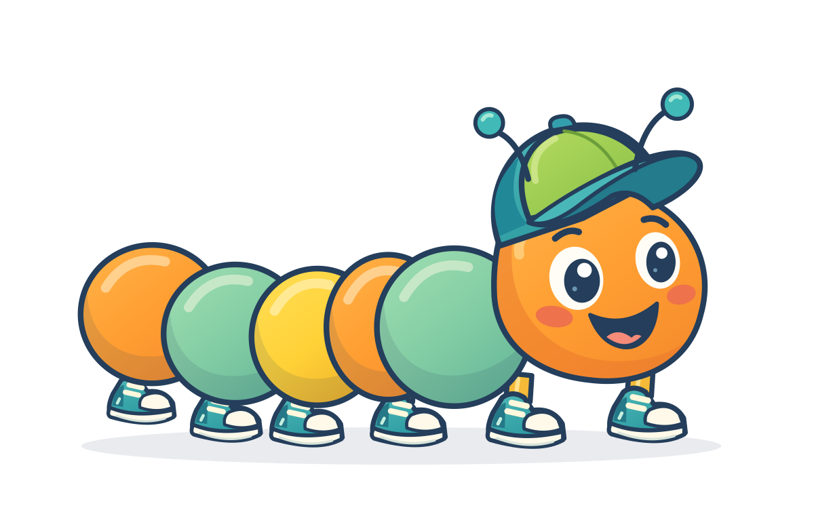
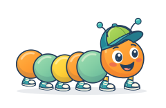

CIEMPI / ESTUDIO DE PERSONAJE / V2
Una nueva silueta, dibujada desde cero.
Referencia elegida y nueva ilustración vectorial. Esta entrega fija el aspecto estático; todavía no sustituye al personaje animado de la app.
Referencia elegida
Primera columna de la exploración visual generada. Recorte de presentación de la lámina original.
Nuevo dibujo editable

SVG nuevo: cara, ojos, cuerpo, jockey, antenas y calzado organizados en grupos. No es una imagen generada ni una captura de la app.

Próximo paso: ajustar el dibujo con esta comparación y trasladar sus proporciones al sistema modular. Las poses, el crecimiento durante la lectura y los demás accesorios necesitan adaptación.